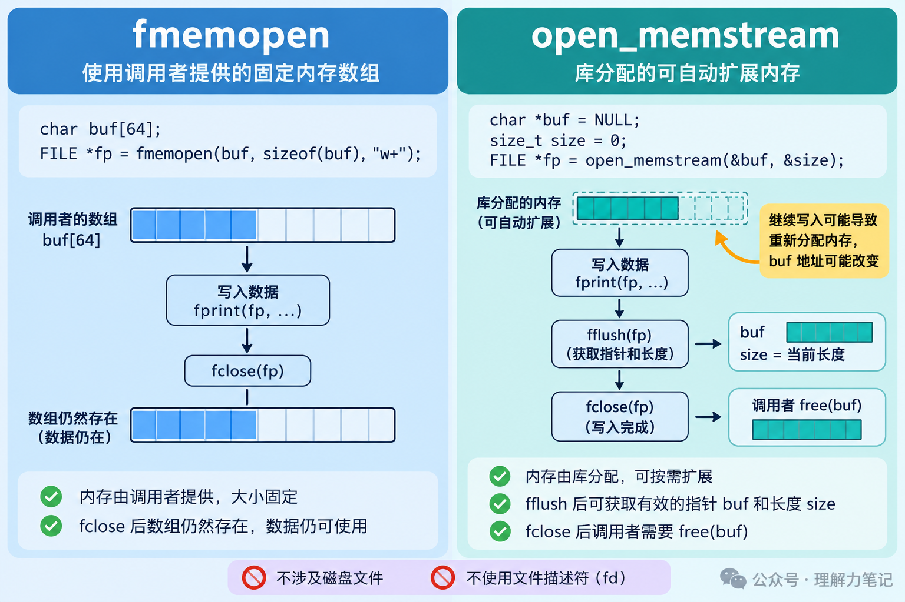

假设项目里已经有一个生成报告的函数，参数是 FILE *out，内部用 fprintf 输出。以前把文件流传进去就能保存报告，现在调用者想直接拿到一段字符串。
不用把函数里的每一处输出都改成字符串拼接。给它传一个内存流，原来的标准 I/O 输出就会写进内存。
本篇介绍两个 POSIX 接口：已有数组、容量固定时用 fmemopen；希望库按需分配并扩大输出空间时用 open_memstream。它们不属于 ISO C 标准，移植时需要确认平台支持。
实验运行于 macOS 14.8.8、Apple clang 16.0.0，未在 Linux 主机实测。
这篇文章怎么读？先分清两种缓冲区由谁提供，再看动态流什么时候能取结果，最后把已有输出函数接到固定数组上。
FILE * 是流接口，不意味着背后一定有磁盘文件。内存流仍然接受 fprintf、fputs 等调用，库把输出送到关联的内存区域。
这有点像报表软件里的“打印”和“预览”：排版逻辑相同，输出目标不同。内存流接住了原本要写入文件的内容，报表函数因此可以继续用。不过，装这些内容的内存有多大、最后由谁释放，还得分清楚。
| 接口 | 空间从哪里来 | 关闭后怎样处理 |
|---|---|---|
fmemopen(buf, cap, "w") |
调用者提供固定数组 | 数组仍归调用者，流不释放它 |
open_memstream(&text, &len) |
库动态分配并扩容 | 成功关闭后，调用者 free(text) |
本篇的 fmemopen 都传入现成数组。接口也支持传入 NULL 让库分配固定容量的内部空间，那种空间在关闭时自动释放，不能套用表中“调用者数组”的归属规则。

图中展示的是顺序写入且刷新、关闭均成功的路径；调用失败时不能继续使用结果。图里的数组容量仅作示意。
动态流需要两个由调用者持有的变量：一个接收缓冲区地址，一个接收长度。它们必须在流存续期间一直有效。以下是 memory_probe.c 中的连续片段，头文件和固定数组实验省略：
接下来写入 hello，成功刷新后再打印结果，然后继续写入 , C：
最后关闭流，取最终结果并释放：
实际输出中的这两行是：
成功的 fflush 或 fclose 会更新 text 和 len。本例一直顺序写入，所以 len 就是已生成的内容长度，不包括末尾的 \0。如果中途定位回前面，刷新后报告的长度还与当前位置有关，不能把这个例子直接套到任意随机写入上。
刷新后拿到的是当时的结果。继续写入可能触发扩容，旧地址可能失效；再次查看内容前，应重新成功刷新，并使用最新的 text 和 len。即使地址偶然没变，也不能把旧快照当成接口保证。
这里 fflush 的作用是让内存结果可获取，不涉及磁盘落盘。内存流也没有可供 fsync 使用的底层文件描述符。
如果调用者已经有一个数组，可以把数组直接关联到流。数组必须一直有效，直到流关闭；不能在流还开着时让局部数组离开作用域。
下面是已有的报表函数，它只关心输出格式：
传普通文件流时，报告写入文件；要写进数组，就加一层适配。以下两段连起来是 report.c 中完整的 report_to_memory 函数：
写完后总是关闭流，检查最后一次刷新有没有失败：
调用者传入可写的 cap 字节数组。函数返回 0 才能把结果当字符串使用；返回 -1 时读取 errno，不要使用数组中的部分结果。容量不足时的 ENOSPC 是这个适配函数主动定义的错误约定，不是要求所有平台的 fmemopen 都用同一个错误码。
示例用 16 字节数组生成报告，实际输出为：
count=3\n 占 8 字节，还要给终止符留一格，所以容量 9 足够，容量 8 就不够作为完整 C 字符串。配套测试验证了这两个边界，以及更小容量和零容量。
fmemopen 不会自动扩大调用者数组。写入可能先进入流缓冲，空间不足的错误到刷新或关闭时才出现，因此不能只检查 fprintf。显式检查输出长度，也能避免误把“内容占满容量、没有终止符”当成成功字符串。
最后别把两种接口的内存归属记反：传给 fmemopen 的栈数组不需要 free；open_memstream 成功关闭后留下的动态结果需要释放。关闭的是流，是否释放结果内存，要看接口约定。
本文为公众号「理解力笔记」原创。转载请联系作者，并保留出处。